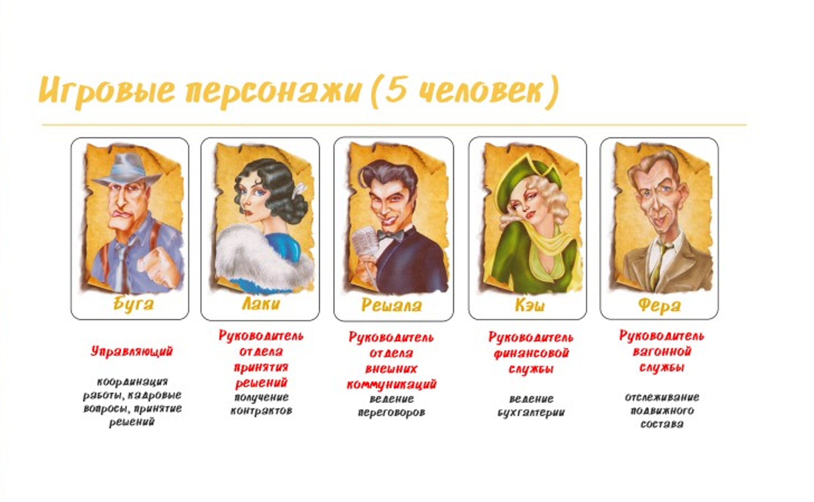
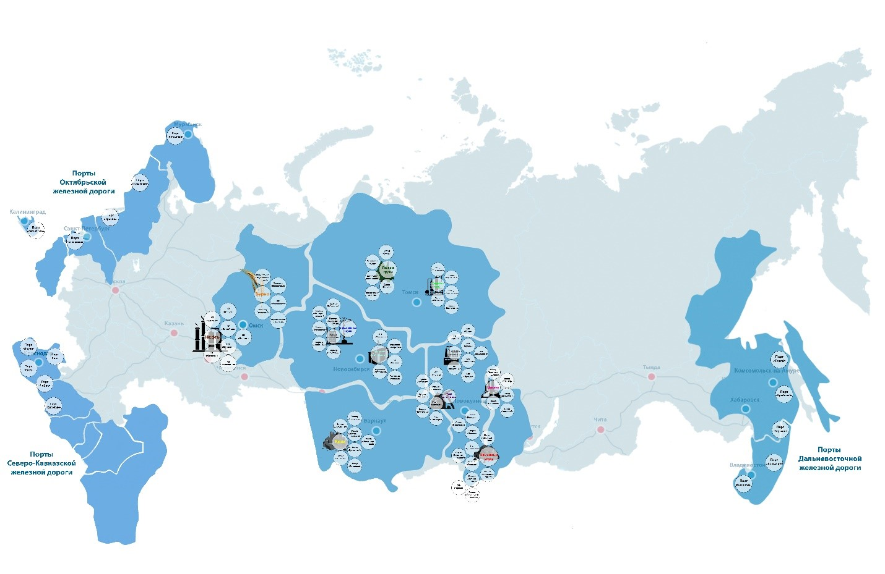

Оператор подвижного состава (Rolling Stock Manager / RSM) © - экономическая и стратегическая интерактивная игра для двух и более команд (игроков).
Цель игры – рационально используя стартовый капитал создать самую крупную транспортную компанию. Размер компании определяется размером капитала (суммарная стоимость железнодорожных вагонов, предприятий и портов и имеющихся наличных денег).
Стартовые позиции
Перед началом игры каждая команда получает по 20 вагонов (железнодорожных полувагонов) и по 4 000 000 Р (четыре миллиона рублей). Каждая команда вправе изменить стартовые условия путем покупки на полученные деньги других железнодорожных вагонов. Рекомендуемое количество команд – четыре (каждой команде присваивается свой цвет и выдаются игровые фишки).
Игра
Порядок ходов определяет ведущий или определяется жребием (можно просто выбрасыванием пары кубиков, по наибольшему значению).
Команда обычно состоит из 2-5 участников (каждый из которых может играть определенную роль в команде):

Полный вариант игры (5-6 часов) проводиться в 2 этапа: начальный и основной. Быстрая версия игры (2 часа) проводиться в 1 этап: начальный.
Каждый этап игры состоит из 4-6 лет (устанавливает ведущий), каждый год из 4 кварталов/кругов (когда каждый игрок выполнил ход в установленном порядке).
Перед началом игры каждая команда направляет за игровой стол «руководителя отдела принятия решений», который и выполняет ход (бросок кубиков: 2-х желтых, 2-х синих и 1-го красного). Комбинация выброшенных на кубиках очков образует контракт: 2 желтых кубика показывают груз(см. справочные данные) , 2 синих кубика – направление перевозки, 1 красный кубик – размер контракта(см. справочные данные) . На игровом столе располагается поле, которое содержит названия основных грузовладельцев и портов (мультимодальных транспортнологистических центров), а также места для установки игровых фишек, которые показывают покупку командой предприятия. На игровом поле также размещают карточки «Действие».

Пред началом каждого года один из игроков вытягивает у ведущего карточку «Событие» которое определяет тенденцию игры всего года. В начальном этапе игры, перед началом 1-го хода каждая команда (обычно игрок бросающий кубики) вытягивает карточку «Действие», которая может повлиять на ход игры. Карточка «Действие» может быть разыграна только в текущем игровом году и при неиспользовании сдается Ведущему по окончании года. В основном этапе игры карточка «Действие» в начале года не вытягивается.
Выручка, штрафы, и победные очки
Выполнение контракта позволяет получить выручку, победные очки и право купить предприятие и порт.
Выполнить контракт может только тот игрок/команда, которая его получила. Передавать или продавать контракты другим игрокам/командам запрещено.
Под выполнением контракта подразумевается предоставление вагонов для перевозки выпавшего размера (объема перевозки). Перевозка может быть осуществлена как своими вагонами, так и арендованными у другого игрока вагонами по договоренности между ними (например: первому игроку выпал контракт по перевозке 10 полувагонов каменного угля на Дальневосточную ж.-д., который может принести 1 580 000 ₽ выручки, при этом своих вагонов у первого игрока для перевозки нет. Тогда первый игрок договаривается со вторым игроком, у которого есть 10 полувагонов, о предоставлении ему вагонов за определенную по договоренности плату).
Игроки, вагонами которых была осуществлена перевозка по контракту, обязаны перевернуть соответствующие карточки вагонов. Дальнейшее использование данных вагонов блокируется до конца игрового года. После уплаты текущих расходов на содержание вагонов в период «расчетного окна» (в игре – период времени между игровыми годами, предназначенный для уплаты налогов, текущего содержания и ремонта вагонов) вагоны снова становятся доступными (переворачиваются обратно).
За выполнение контракта игрок/команда получает выручку от перевозки от ведущего.
Выполнение контракта также дает право игроку купить 1 предприятие в отрасли, которая предоставила груз к перевозке. Также выполнение контракта позволяет купить 1 порт железной дороги назначения (Октябрьской, Северо-Кавказской или Дальневосточной), куда был перевезен груз. (например: игрок выполнил контракт по перевозке 10 цистерн, нефть сырая, на Октябрьскую ж.-д., поэтому он может принять решение о покупке 1 предприятия в нефтяной промышленности и дополнительно 1 порта на Октябрьской ж.-д.).
Штрафом за невыполнение контракта является потеря предприятия в отрасли, предоставившей груз, а также порта дороги назначения, куда не был перевезен груз (например: игрок не смог выполнить контракт по перевозке 10 полувагонов каменного угля на Дальневосточную ж.-д., в таком случае он лишается 1 предприятия в угольной промышленности и теряет 1 порт на Дальневосточной ж.д. – при их наличии).
Победные очки начисляются в случае выполнения контракта:
• 1 победное очко – игроку/команде, который выполнил контракт;
• + за каждое предприятие в отрасли, предоставившей груз к перевозке, начисляется:
1 победное очко – отрасли промышленности, состоящие из 4 предприятий: «цемент», «зерно», «лес», «химические грузы», «грузы в контейнерах»);
2 победных очка – отрасли промышленности, состоящие из 6 предприятий: «нефть и нефтепродукты», «кокс», «руда железная», «строительные грузы», «черные металлы»;
3 победных очка – отрасль промышленности, состоящая из 10 предприятий: «каменный уголь». (например: в собственности двух игроков находится по 1-му предприятию в нефтяной промышленности. Первый игрок выполнил контракт по перевозке нефти на Октябрьскую ж.д. Тогда первый игрок получит 3 победных очка, а второй игрок получит 2 победных очка).
При определении победителя победные очки учитываются в общей стоимости компании по курсу 1 победное очко – 100 000 ₽.
В течение своего хода игрок может потратить победные очки:
• 10 победных очков за 1 дополнительный бросок кубиков (1 раз за 1 ход);
• 20 победных очков за право покупки свободного предприятия в любой отрасли или порта любой дороги назначения (1 раз за 1 ход). В любой момент в течение игры игрок может потратить 30 победных очков за право отменить любой выпавший как себе, так и сопернику контракт.
Вагоны
Для выполнения контракта игроку/команде необходимо использовать только тот род вагонов, который обозначен для соответствующего груза (см. справочные данные) . Игрок/команда, совершающий ход, может пользоваться вагонами других игроков на договорных условиях.
Вагоны в игре делятся на 4 рода: полувагоны (ПВ), цистерны (Ц), платформы (ПЛ), крытые вагоны (КР). Вагоны можно покупать (см. справочные данные) , продавать перед началом каждого года, а также они требуют обслуживания и ремонта, которые проводятся по окончанию года (см. справочные данные) .
Игроки могут покупать и продавать вагоны в банке и у других команд только в период «расчетного окна».
Отрасли и предприятия, порты
В игре представлено 11 номенклатур грузов, что соответствует отраслям промышленности и экономики (см. справочные данные) . Владение предприятиями выпускающих однородную продукцию позволяет игроку по желанию увеличивать (или не увеличивать) в свой ход количество груза для перевозки по выпавшему контракту. Необходимым условием для увеличения является совпадение груза по выпавшему контракту и продукции, которую выпускают предприятия, находящиеся в владении (например: игроку выпал контракт по перевозке 10 полувагонов каменного угля на Дальневосточную ж.-д., у него в собственности предприятие в отрасли промышленности строительных материалов, значит увеличить контракт каменного угля он не может).
Владение «контрольным пакетом» (50% предприятий, выпускающих однородную продукцию) позволяет отменять запреты на отмену или изменение размера контрактов от других игроков, за исключением запрета погрузки от владельца «контрольного пакета» портовой инфраструктуры дорог назначения.
В игре представлены три портовые дороги: Северо-Кавказская, Октябрьская и Дальневосточная (см. справочные данные).
Владение «контрольным пакетом» портов позволяет игроку/команде по своему желанию блокировать выгрузку в портах сопернику или взымать дополнительную плату с контракта соперника за возможность выгрузки в течение его хода.
Залог и продажа имущества, банкротство
В случае необходимости получения денежных средств игроки/команды могут продавать или закладывать свое имущество в банк в течение «расчетного окна» или своего хода.
Игроки/команды имеют право отдать в залог банку свои предприятия или порты, получив из банка денежные средства в объеме, равном половине номинальной стоимости имущества. При этом право собственности сохраняется за игроками. Заложенные предприятия и порты не приносят никаких положительных эффектов, а также на них не распространяются остальные правила игры (т.е. игрок не может потерять заложенное имущество). Выкупить предприятие или порт игрок может в течение «расчетного окна» или своего хода за полную стоимость.
Игроки имеют право продавать банку свои вагоны, предприятия или порты (см. справочные данные) . Банк принимает вагоны по цене в 2 раза дешевле номинальной стоимости.
Игроки/команды могут заключать сделки по аренде вагонов, продаже предприятий, портов и карточек «Действие» между собой в течение всей игры. Любой игрок/команда может в конце года объявить себя банкротом и не оплачивать долги по обязательствам – текущее содержание и ремонт вагонов. В этом случае он имеет право в следующем году начинать со стартовых позиций.
Определение победителя
Для определения победителя производиться расчет стратегической стоимости каждой компании. Общая стоимость всех активов: победных очков, вагонов, предприятий и портов имеет свой денежный эквивалент, который может умножаться на определенный коэффициент:
• победные очки: Участник, у которого по итогам игры окажется большее число победных очков, умножает общую стоимость своих победных очков на коэффициент 1,5.
• вагоны: игрок/команда, у которого по итогам игры окажется большее количество вагонов, умножает общую стоимость своих вагонов на коэффициент 1,2.
• предприятия и порты: каждый игрок/команда считает число активных (не отданных в залог) предприятий выпускающих однородную продукцию и число активных портов. Порты считаются общим количеством независимо от дороги принадлежности. За число предприятий, выпускающих однородную продукцию 𝑁 игрок получает коэффициент 𝐾, определяемый по формуле: 𝐾=1+0,2·𝑁. На полученный коэффициент 𝐾 умножается стоимость всех предприятий выпускающих эту продукцию. Относительно портов действует тот же порядок расчета (без разделения на дороги). Заложенные предприятия и порты не капитализируются, у заложенных них определяется только остаточная стоимость. Данная стоимость прибавляется к наличным денежным средствам.
Пример расчета:
Команда «А» по итогам игры владеет 2 портами Октябрьской ж.-д. и 4 портами Северо-Кавказской ж.-д., 3 предприятиями в чёрной металлургии. Коэффициенты 𝐾 соответственно равны:
Для портов 𝐾 = 1+0,2·6 = 2,2
Для чёрных металлов 𝐾 = 1+0,2·3 = 1,6
Стоимость предприятий и портов C равна:
Для портов Октябрьской ж.д. и Северо-Кавказской ж.д. C = 2,2·(4·1 000 000 + 2·4 000 000) = 26 400 000 ₽
Для предприятий отрасли чёрной металлургии C = 1,6·(3·4 500 000) = 21 600 000 ₽
Общая стоимость всех предприятий и портов составляет 26 400 000 + 21 600 000 = 48 000 000 ₽.